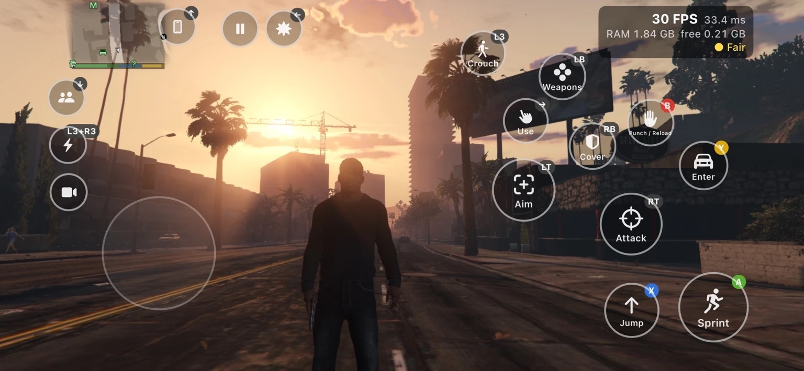
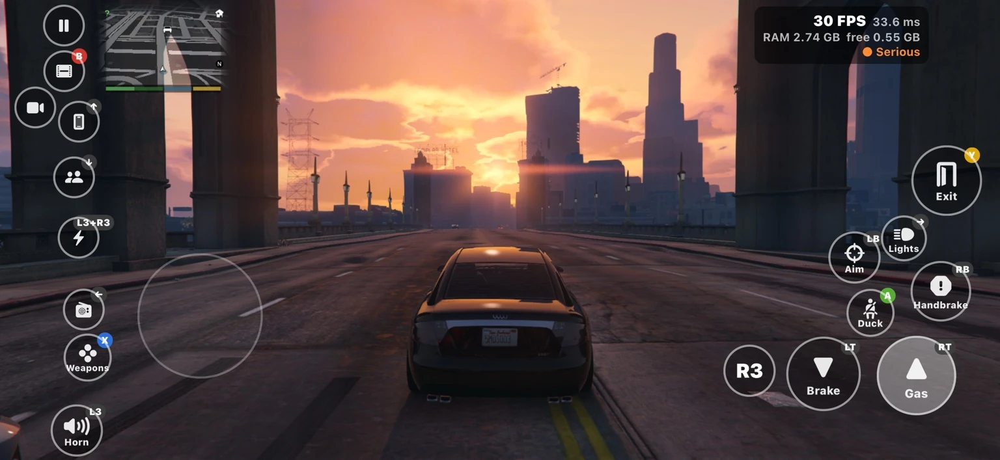
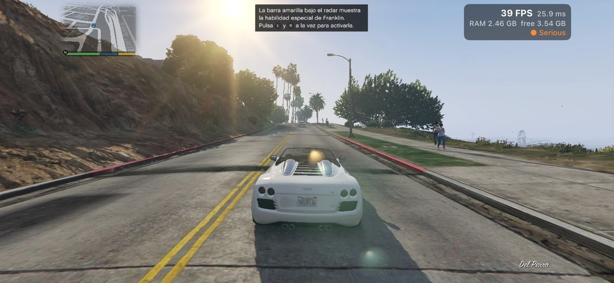
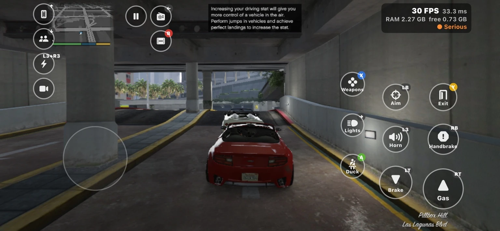

THE GTA V iOS PROJECTGTA V.
GTA V.
The iOS project.
Explore the project on iOS.
Follow development and connect with the community.
Explore gameplayAN INDEPENDENT COMMUNITY PROJECT
CAPTURED ON iOS
Join the conversation Gameplay preview
In-game moments, shared by our Discord community.
COMMUNITY CAPTURE
Prologue
Shared by SaintSnoopon Discord

COMMUNITY CAPTURE
Los Santos at sunset
Shared by orslokxz._on Discord

COMMUNITY CAPTURE
Across the city
Shared by vcxrmon Discord

COMMUNITY CAPTURE
Del Perro
Shared by AlexitoAton Discord

COMMUNITY CAPTURE
Pillbox Hill
Shared by mobpsycho5995on Discord
PROJECT CREDITS
Credits & acknowledgements
LAUNCHER DEVELOPMENT
XDE
Known as XDE on Discord.
PLATFORM
iOS
For supported Apple devices.
An independent community project. Not affiliated with or endorsed by Rockstar Games, Take-Two Interactive, or Apple. Grand Theft Auto V and its related marks belong to their respective owners. Apple and the Apple logo are trademarks of Apple Inc.